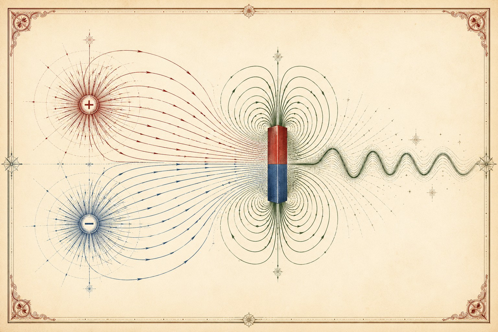

A BookBank Field Guide · NEET Physics · Class 12 · Part I
The Invisible
Machine
Six live case studies in electricity,
magnetism, and the light they make together.

A warm, elegant editorial illustration on aged cream paper for a physics field guide titled "The Invisible Machine." A pair of glowing charges at the left send curved field lines streaming to the right, where the lines gather and curl around a bar magnet, and from the magnet a smooth sinusoidal wave of light radiates off to the right edge. Oxblood-red, indigo-blue, and forest-green line art with fine engraved/etched detailing, like a 19th-century scientific plate. Generous whitespace, no text baked in, flat vector-meets-copperplate style. ~1200x800px, 3:2 landscape; keep the composition centred with safe margins, it is letterboxed into a 3:2 box.
Generate with your image agent, then drop the file here.
In the voice of Richard Feynman.
“What I cannot create, I do not understand — so let’s build electromagnetism from scratch.”
How to use this book
A companion, not a replacement
Your textbook already has the formulas and the derivations. This little book does something else: it takes six of the most beautiful ideas in the Class 12 syllabus and lets you play with them. Every chapter is one puzzle, and every chapter has a live figure you can push on. Drag the charges. Fire the particle. Flip the switch. Tune the radio. The equations will feel inevitable afterwards.
- The Field Nobody Can SeeCharges & the electric field
- The Electrons Crawl, the Light Is InstantCurrent & drift velocity
- Caught in a CircleMagnetism bends moving charge
- Move a Magnet, Make ElectricityFaraday & Lenz
- Tuning the InvisibleAC & resonance
- Light Is Just ThisElectromagnetic waves
- CheatsheetEvery formula, one page